ODBIÓR ROBÓT
Plac zabaw
w Sowlinach
Wymiana nawierzchni i urządzeń zabawowych oraz rekreacyjnych. Gmina Limanowa wskazuje TEAM SOUTH jako wykonawcę i informuje o odbiorze 8 lipca 2026 r.
Czytaj w serwisie Gminy Limanowa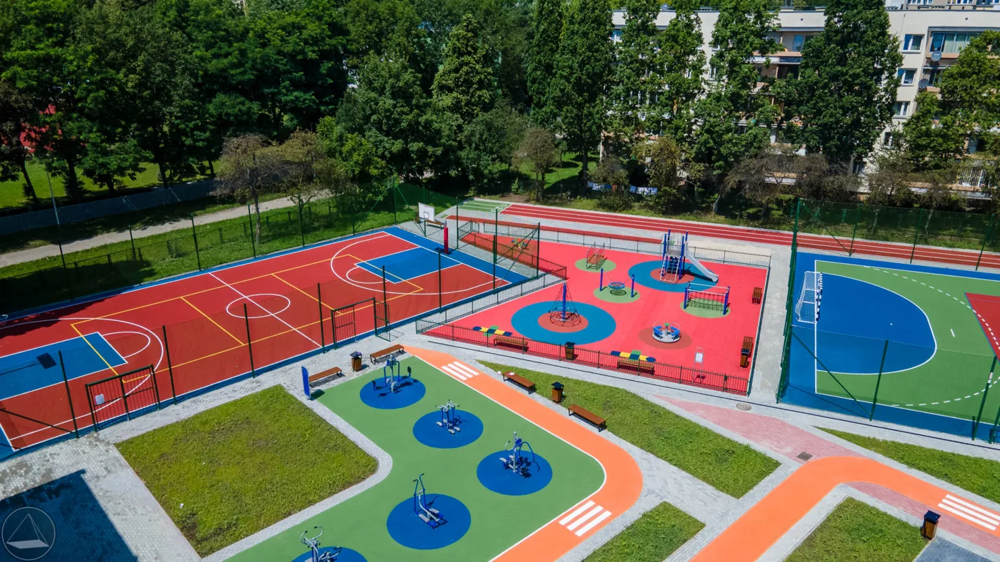
TEAM SOUTH / NIEDŹWIEDŹ
Roboty ziemne. Brukarstwo. Infrastruktura.
Od przygotowania terenu po gotowe otoczenie.
01 / ZAKRES PRAC
Wybierz zakres, który Cię interesuje. Zobacz, jakie informacje warto przygotować do rozmowy o inwestycji.
PRZYGOTOWANIE INWESTYCJI
Wykopy, niwelacja i przygotowanie terenu. Ustalmy warunki na działce oraz zakres prac ziemnych.
Przygotuj lokalizację, orientacyjne wymiary oraz informacje o dojeździe do działki.
02 / W TERENIE
Nawierzchnie, sprzęt i zagospodarowanie terenu. Materiały z galerii firmy — wybierz kategorię i otwórz zdjęcie, aby zobaczyć szczegóły.
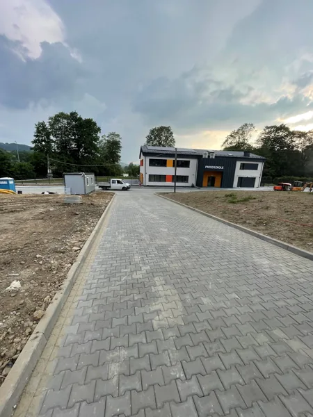
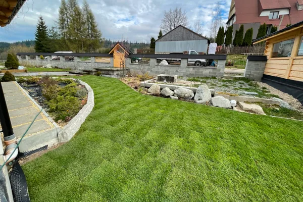
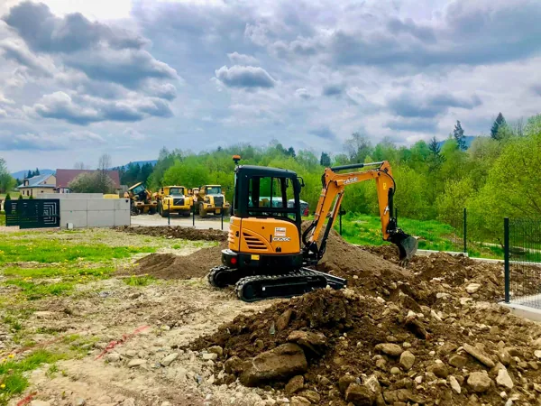
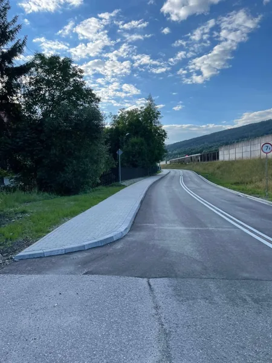
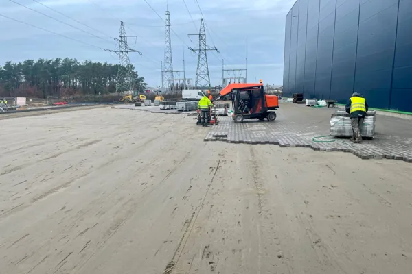
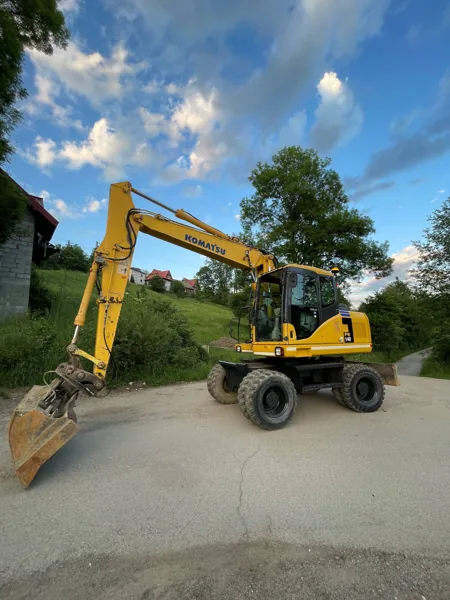
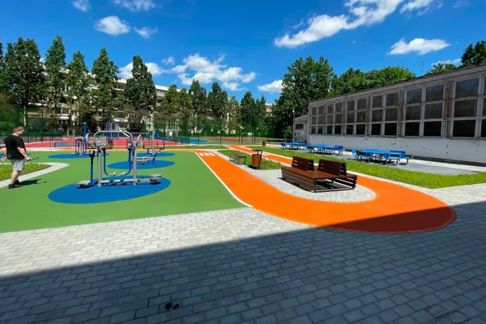
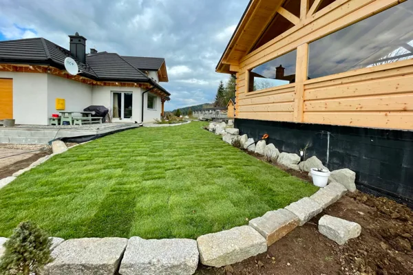
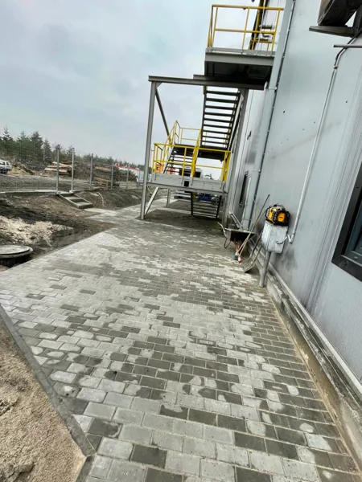
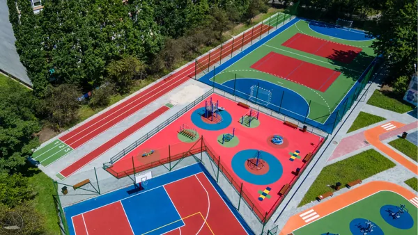
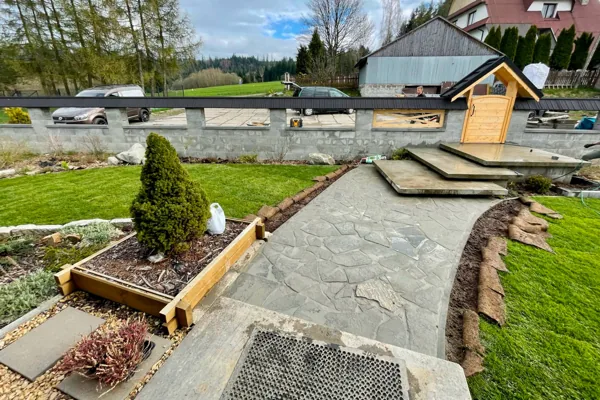
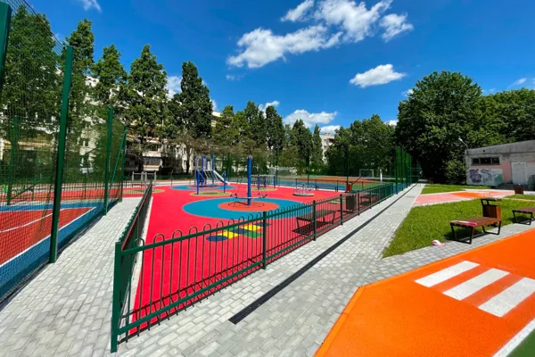
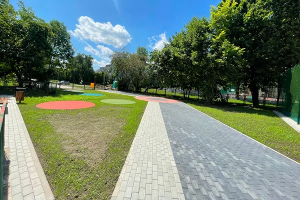
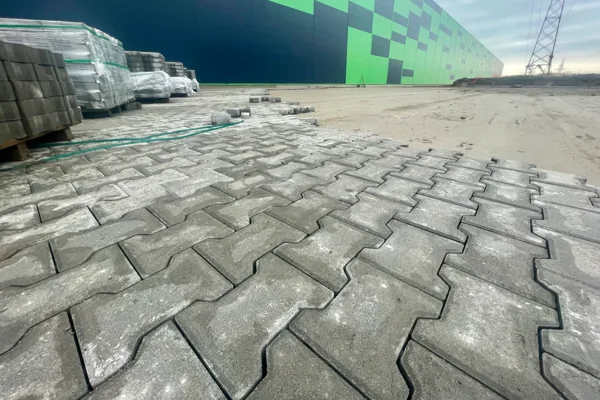
Zdjęcia przedstawiają zakres prac. Nie przypisujemy niepotwierdzonych lokalizacji do poszczególnych fotografii.
03 / REALIZACJE I PUBLIKACJE
O inwestycjach z udziałem TEAM SOUTH piszą również lokalne samorządy. Informacje poniżej mają podane źródło i datę publikacji.
Wymiana nawierzchni i urządzeń zabawowych oraz rekreacyjnych. Gmina Limanowa wskazuje TEAM SOUTH jako wykonawcę i informuje o odbiorze 8 lipca 2026 r.
Czytaj w serwisie Gminy LimanowaRoboty ziemne, brukarstwo i nasadzenia przy urzędzie gminy. Komunikat samorządu opisuje trwające prace; nie stanowi potwierdzenia zakończenia inwestycji.
Czytaj w serwisie Łososiny Dolnej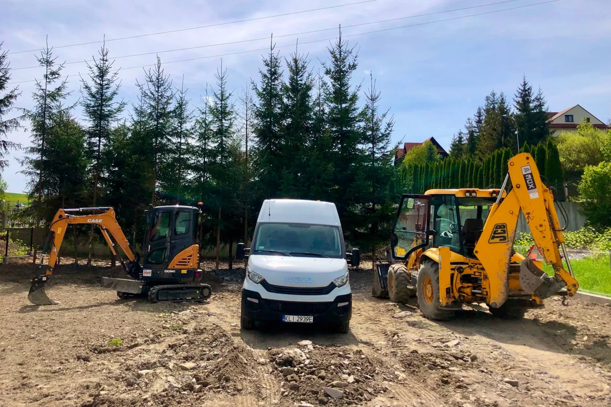
04 / TEAM SOUTH
Firma z Niedźwiedzia łączy roboty ziemne, wykonanie nawierzchni i zagospodarowanie otoczenia. Własne zaplecze techniczne wspiera organizację kolejnych etapów prac.
Dla inwestorów prywatnych i publicznych, generalnych wykonawców, projektantów oraz firm podwykonawczych.
Porozmawiajmy o współpracy05 / OD POMYSŁU DO ROZMOWY
Przygotuj krótki opis inwestycji w trzech krokach. Na końcu skopiujesz go albo otworzysz gotową wiadomość w swojej poczcie.
06 / PRZED PIERWSZĄ ROZMOWĄ
Informacje, które pomogą przygotować rozmowę o Twoim projekcie.
Lokalizację, rodzaj prac, orientacyjne wymiary i oczekiwany termin. Jeśli masz projekt lub zdjęcia terenu, zaznacz to w zapytaniu i dołącz je w swoim programie pocztowym.
Tak. W kreatorze wybierz „Kilka zakresów / prace kompleksowe” i opisz inwestycję. Oferta firmy obejmuje prace ziemne, nawierzchnie, drogi, place zabaw i tereny zielone.
Od zakresu, lokalizacji, warunków gruntu, dostępu dla sprzętu, materiałów i organizacji prac. Ostateczną wycenę oraz dostępność terminu uzgadnia się bezpośrednio z firmą.
Siedziba jest w Niedźwiedziu. Strona firmy wymienia również prace w Niepołomicach i przy hali MLP Gorzów. Możliwość dojazdu do Twojej inwestycji wymaga indywidualnego uzgodnienia — podaj miejscowość w zapytaniu.
Nie rezerwuje terminu. Przygotowuje opis do skopiowania, pobrania lub otwarcia w Twojej poczcie. Wysyłkę wykonujesz samodzielnie; firma potwierdza warunki współpracy.
07 / KONTAKT
TEAM SOUTH · Niedźwiedź 145, 34-735 Niedźwiedź
797 559 814 biuro@teamsouth.pl ↗